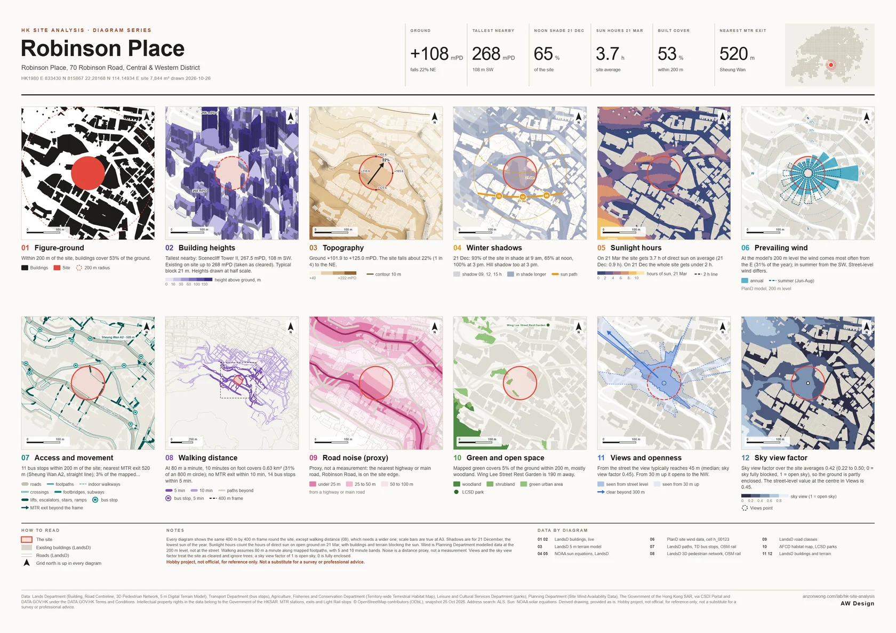
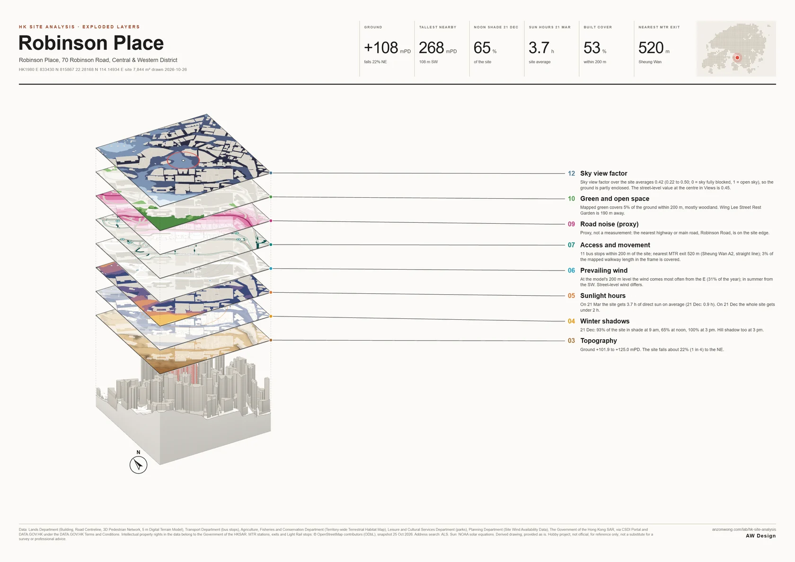
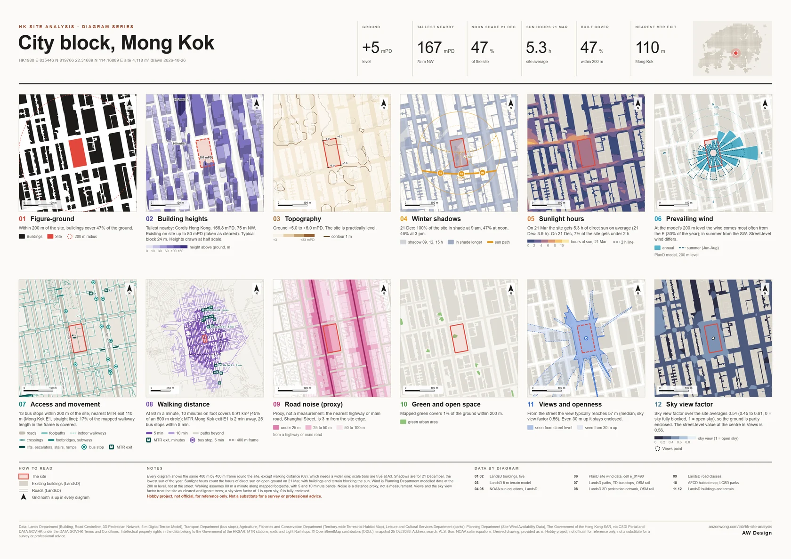
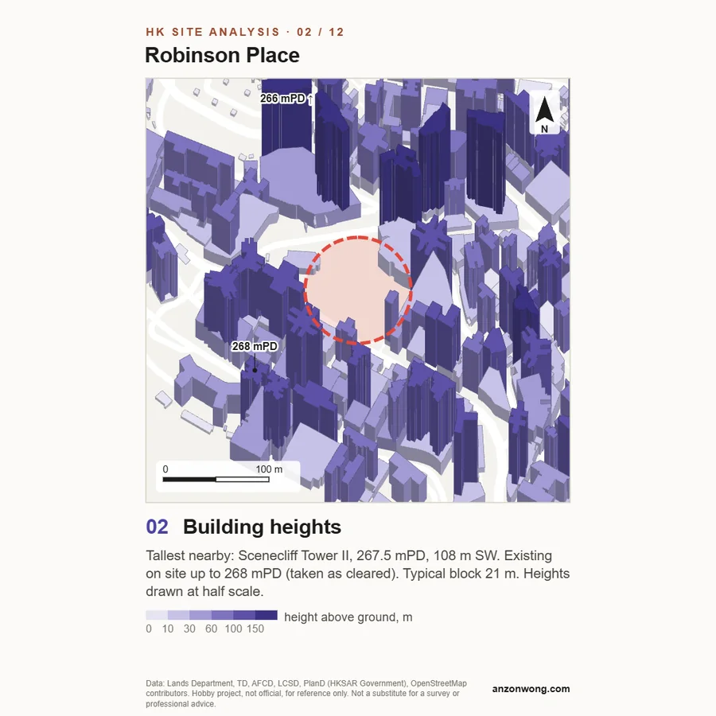
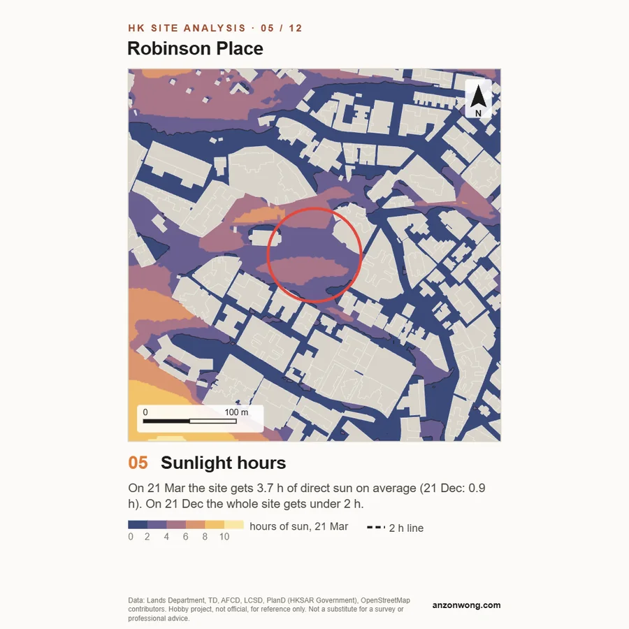
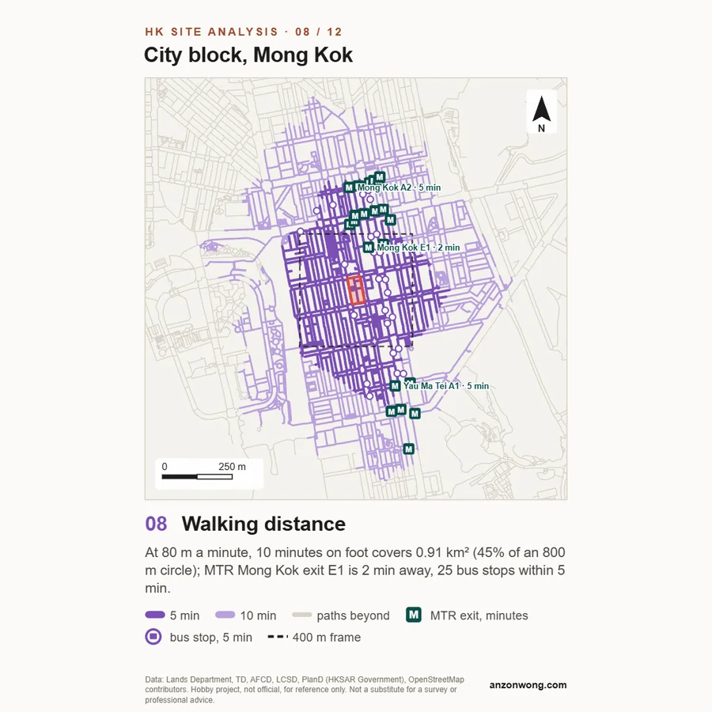
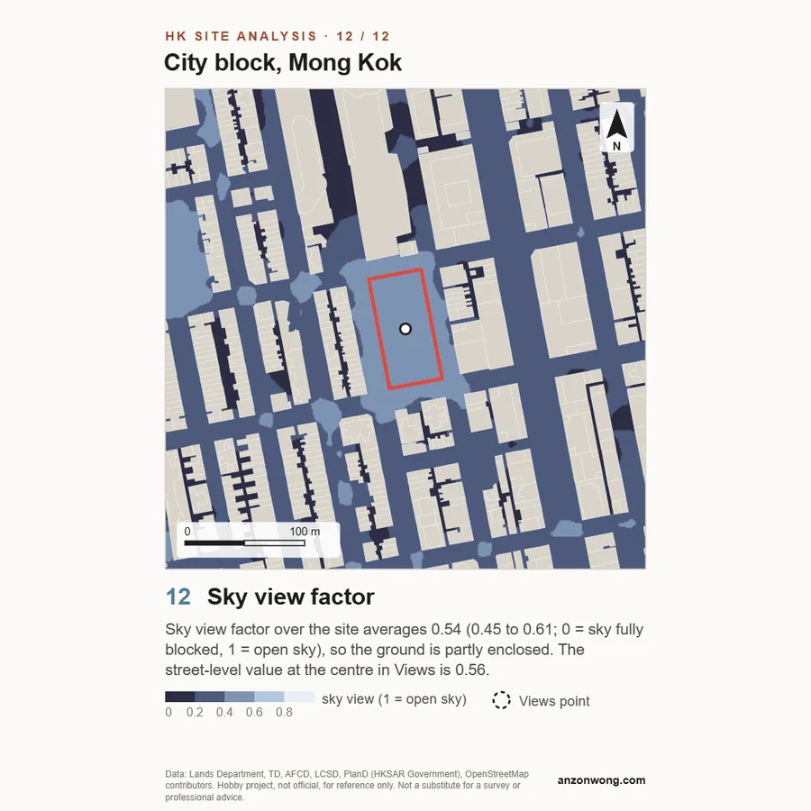

香港地盤分析
在香港任何地方選取地盤，即可得到十二幅以相同範圍及比例繪畫的地盤分析圖（步行範圍圖採用較大範圍）：圖底關係、建築物高度、地形、冬至陰影、日照時數、盛行風、交通、步行範圍、道路噪音、綠化、景觀及天空可視因子。地盤可以立體旋轉觀看，分析圖可拉開成分層爆炸軸測圖，並可選擇色彩風格；再下載 A3 或 A2 圖板、正方形圖片，或以香港 1980 方格坐標繪畫的 DXF 及 SVG 圖則，直接放入 CAD。
地盤
按「分析地盤」後，十二幅分析圖組成的圖板會在此顯示。
資料來源：香港特別行政區政府地政總署、規劃署、運輸署、漁農自然護理署及康樂及文化事務署，經空間數據共享平台（CSDI）及資料一線通；港鐵出口及輕鐵站 © OpenStreetMap 貢獻者。個人興趣項目，並非官方資料，只供參考，不能取代測量或專業意見。







- 搜尋地址或大廈名稱，或直接在地圖上點選。亦可輸入坐標（緯度、經度，或香港 1980 方格坐標 E、N）。
- 設定地盤：選擇半徑 25 至 200 米的圓形，或按「繪畫界線」逐一點選地盤角點。拖動圓點即可移動地盤。
- 如有需要可為圖板加上標題。範圍可保留「Auto」或自選大小；地圖上的虛線正方形即分析圖涵蓋的範圍。再選擇色彩風格（紙本、線稿、鮮明或夜色）及方形或圓形框；兩者均可在分析後再更改。
- 按「分析地盤」。資料即時從政府伺服器載入，一般約十秒完成。然後下載 A3 或 A2 PDF、PNG 圖板，或以 ZIP 下載十二張方圖。
- 按「立體模型」可旋轉觀看地盤，按「分層爆炸圖」可看到分析圖層層疊在地盤上方；拖動即可旋轉，雙指或滾輪可縮放。「分層爆炸圖（PNG）」可下載一張 A3 爆炸圖。DXF 及 SVG 以香港 1980 方格坐標（米）及分層方式提供平面圖層。
- 01 圖底關係以黑色在白底上顯示建築物，並計算範圍半徑內建築物覆蓋地面的比例。
- 02 建築物高度每座建築體以平面斜視方式立起，按離地高度分為六級著色，並標示最高三座的主水平基準高度（mPD）。高度以一半比例繪畫，以免高樓遮蓋街道。
- 03 地形以色帶及山勢陰影顯示地面高度，附 mPD 等高線、地盤上的地面水平，以及標示地盤傾斜程度及方向的箭頭。
- 04 冬至陰影12 月 21 日（全年太陽最低之日）上午 9 時、正午及下午 3 時的陰影互相重疊，陰影時間越長顏色越深。另附 12 月 21 日及 6 月 21 日的太陽軌跡，以及每個時段地盤在陰影中的比例。
- 05 日照時數以色彩顯示 3 月 21 日（春分）每處地面可得的直接日照時數，列出地盤平均值及少於兩小時的比例，並附 12 月 21 日的數字。所有建築物及山勢均計算遮擋；地盤本身假設已清空。
- 06 盛行風按規劃署模擬數據繪畫的全年及夏季（6 至 8 月）風玫瑰圖，採用地盤所在網格於 200 米高度的資料。
- 07 交通及人流行人路、行人天橋、扶手電梯及樓梯、巴士站、港鐵出口及輕鐵站，並列出最近出口及車站的直線距離，以及已記錄行人通道中有上蓋的比例。
- 08 步行範圍沿地政總署三維行人道路網（包括行人天橋、隧道、樓梯及扶手電梯），以平均每分鐘 80 米計算，由地盤步行 5 分鐘及 10 分鐘可到達的範圍，並列出範圍內的港鐵出口及巴士站。
- 09 道路噪音（推算）以快速公路及主要道路為基準，劃出 25、50 及 100 米的距離帶，用以推算交通噪音較可能影響的範圍，並非噪音量度。
- 10 綠化及休憩空間根據生境地圖顯示林地、灌木、草地、農地及市區綠化地帶，標示附近的公園，並計算地盤周邊綠化佔地面的比例。
- 11 景觀及開揚度由地盤中心於街道層面及離地 30 米可看到多遠、哪些方向保持開揚，以及街道層面的天空可視因子（1 為完全開揚，0 為完全封閉）。
- 12 天空可視因子以色彩顯示整個範圍內人眼高度的天空可視因子：站在每一點可看到多少天空，由 0（完全封閉）至 1（完全開揚），並列出地盤的平均值。
- 立體及爆炸圖按地政總署高度把建築物立於地形模型之上，並可把其中八幅分析圖（地形、陰影、日照時數、風、交通、噪音、綠化及天空可視因子）拉開成懸浮於地盤上方的圖層，形成分層爆炸軸測圖，各層可個別開關。可下載為 A3 圖紙，每層均附標題及分析結果。
- DXF 及 SVG平面圖層（地盤、附高度的建築物、道路、等高線、陰影、行人路、交通、綠化、景觀及步行範圍）以真實香港 1980 方格坐標（米）提供，每類一個具名圖層，可直接放入 AutoCAD、Rhino 或 Illustrator。
每幅分析圖只採用本工具載入的資料繪畫。如政府伺服器沒有回應，或地盤附近沒有某類資料，分析圖會以文字說明，而不作推測。
建築物高度採用地政總署為每座建築體記錄的底部及頂部水平。如建築體沒有高度記錄，則按樓層數目估算，如圖中五分之一或以上的建築體屬估算，高度圖的說明會列出數目。屋頂構築物及退台並未計算在內。第 02 圖的高度以一半比例繪畫。
太陽位置按香港時間，以 NOAA 太陽位置方程式計算。圖上的陰影投射至地盤平均地面高度的水平面，因此較遠斜坡上的陰影屬約數。地盤在陰影中的比例另行計算：由地盤內多個點向太陽作立體光線測試，計及所有建築物及地形。
風資料採用規劃署的「地盤總體風環境資料」：屬模擬數據，以 2009 年逐小時資料計算，取該資料 200 米高度的數值，每個網格涵蓋數百米範圍。資料描述吹向該區的風，並非街道層面的風，亦不能取代空氣流通評估。
道路噪音只按距離推算：只考慮道路類別，並未計及交通流量、隔音屏障、建築物外牆或實測數值。港鐵出口及輕鐵站取自 2026 年 10 月 25 日的 OpenStreetMap 資料；當中少數出口缺漏或沒有編號。資料欄及第 07 圖所示最近出口為直線距離；第 08 圖則按路網列出步行時間。
景觀分析假設地盤已清空、不計樹木，並由地盤中心觀看。地形採用 5 米數碼地形模型，準確度約為正負 5 米；模型包括部分天橋、路堤及樹冠，因此在這些位置景觀或等高線可能提早受阻或出現起伏。所有分析圖均以方格北向上；在香港，方格北與真北相差不足十分之一度。
日照時數按 3 月 21 日及 12 月 21 日，在太陽高於地平線 2 度期間，每 10 分鐘計算一次地面可得的直接日照，計及所有建築體及地形。只計直接日照，並未計及雲量、樹木、露台或反射光，亦不屬於任何標準下的採光或日照評估。天空可視因子圖以相同的建築物及地形，於離地 1.5 米、向 36 個方向計算。
步行範圍假設沿已記錄的路網以每分鐘 80 米步行，按立體長度計算；樓梯以兩倍、扶手電梯以一倍半計算，每部升降機或每個交通燈過路處另加 30 秒，並不包括港鐵付費區大堂。地政總署資料列為單向的扶手電梯及自動行人道只按該方向計算，時間由地盤向外量度；中環至半山自動扶梯於上午 10 時轉向，因此按雙向計算。並未計及實際等候時間、商場及天橋的開放時間，或資料中缺漏的通道。如地盤附近沒有行人路網資料，則改用道路，並在分析圖上註明。
立體視圖及 DXF、SVG 檔案採用與分析圖相同的資料，亦有相同限制。建築物以底部至頂部水平的簡單柱體表示，不包括屋頂構築物。
個人興趣項目，並非官方資料，只供參考，不能取代測量或專業意見。
- 建築物Building, 地政總署，即時經 CSDI 平台載入；資料集頁面在資料一線通
- 道路Road Centreline, 地政總署，即時經 CSDI 平台載入；資料集頁面在資料一線通
- 地形5m Grid DTM, 地政總署，經資料一線通（2026 年 10 月 18 日為香港地盤模型分塊處理）
- 行人路三維行人道路網, 地政總署，經 CSDI 平台（即時）
- 巴士站巴士路線站位置座標, 運輸署，經 CSDI 平台（即時）
- 風地盤總體風環境資料, 規劃署，經 CSDI 平台及規劃署網站（即時）
- 生境全港性陸地生境地圖, 漁農自然護理署，即時經 CSDI 平台載入（資料集頁面在資料一線通；按 2019 年 9 月至 12 月的衞星影像繪製）
- 公園公園及動植物公園, 康樂及文化事務署，經 CSDI 平台（即時）
- 港鐵港鐵站、出口及輕鐵站, © OpenStreetMap contributors, ODbL，2026 年 10 月 25 日的資料副本，隨工具提供
- 地址搜尋Address Lookup Service (ALS), 香港特別行政區政府，經資料一線通
- 太陽NOAA 太陽位置方程式，於瀏覽器內計算
- 立體three.js, MIT 授權，經 jsDelivr 載入
- 地圖地圖資料來自地政總署
政府資料：來源為香港特別行政區政府地政總署、規劃署、運輸署、漁農自然護理署及康樂及文化事務署，經空間數據共享平台（portal.csdi.gov.hk）及資料一線通，按資料一線通條款及細則使用。資料的知識產權屬香港特別行政區政府所有。港鐵站、出口及輕鐵站：© OpenStreetMap 貢獻者，按開放數據庫授權（ODbL）提供。衍生圖則，按現狀提供。
每張圖板及爆炸圖均印有完整資料來源及免責聲明，每張方圖亦附有簡短資料來源及免責聲明，DXF 及 SVG 檔案亦以文字載有資料來源。本工具為免費個人興趣項目，並非專業意見，與政府、香港鐵路有限公司或 OpenStreetMap 並無關連。